第 1 页 · 项目6
项目6
搭建复杂的工作流与智能体
工信精品人工智能系列教材
《智能体项目开发实战（扣子）（微课版）》
项目6 搭建复杂的工作流与智能体
第 2 页 · 目录
目录
01
工作流进阶
02
多Agent模式智能体开发
03
课后实践
业务逻辑节点、工作流嵌套
合同金额审查、多平台文案生成
多Agent模式概述与切换
电商客服模拟实战
改进工作流、代码节点练习
工作流嵌套改造、添加Agent节点
项目6 搭建复杂的工作流与智能体
02
第 3 页 · 学习目标
学习目标
知识目标
了解业务逻辑节点
了解工作流嵌套
了解多Agent模式智能体
能力目标
运用业务逻辑节点创建工作流
通过工作流嵌套实现业务逻辑模块化
设计多Agent模式智能体协同工作
素养目标
培养模块化的工程思维
培养精益求精的工匠精神
提高分析和解决复杂问题的能力
项目6 搭建复杂的工作流与智能体
03
第 4 页 · 项目引入
项目引入
在掌握了智能体的基本开发技能之后，本项目将介绍如何搭建复杂的工作流和多Agent模式智能体。
本项目首先介绍如何利用业务逻辑节点精准控制工作流，并通过工作流嵌套将复杂业务逻辑模块化；然后引领读者探索多Agent模式智能体的开发，让多个具备不同专长的智能体协同工作，从解决单一问题转向处理复杂的系统性任务。
学习路径
业务逻辑节点
精准控制工作流
工作流嵌套
模块化复杂业务
多Agent模式
智能体协同工作
实战
项目6 搭建复杂的工作流与智能体
04
第 5 页 · 6.1
6.1
工作流进阶
利用业务逻辑节点精准控制工作流，通过工作流嵌套实现复杂业务逻辑模块化
项目6 搭建复杂的工作流与智能体
05
第 6 页 · 6.1.1
6.1.1
业务逻辑节点
业务逻辑节点是工作流中进行复杂判断、流程控制和数据处理的核心组件，将传统编程逻辑封装为可视化模块。
选择器节点
条件分支控制
意图识别节点
识别用户意图
批处理节点
并行批量处理
循环节点
串行重复执行
代码节点
自定义业务逻辑
变量聚合节点
多路输出整合
这些节点将大模型的生成能力与确定性的业务规则结合，大幅提升复杂AI项目的可靠性和执行效率。
项目6 搭建复杂的工作流与智能体
07
第 7 页 · 6.1.1
6.1.1
业务逻辑节点——批处理节点与循环节点的区别
| 对比项 | 批处理节点 | 循环节点 |
| 目标定位 | 大规模、任务间无依赖的批量操作 | 任务有先后顺序或需要结果依赖的场景 |
| 执行方式 | 并行执行 | 串行执行 |
| 数据依赖 | 任务间相互独立，无先后顺序要求 | 当前任务可以依赖上一次循环的结果 |
| 中断能力 | 不支持提前终止，会处理完当前批次 | 支持通过终止循环节点提前跳出，灵活性高 |
| 资源配置 | 可设置并行数量，占用资源较多 | 每次只处理一个任务，资源占用稳定可控 |
| 运行控制 | 仅支持处理数组参数，运行次数默认为数组长度 | 使用数组循环、指定循环次数和无限循环 |
| 适用场景 | 批量生成图像、批量查询数据、大规模数据并行分析 | 连续对话生成、多步骤有状态的数据处理（如依次审批） |
项目6 搭建复杂的工作流与智能体
08
第 8 页 · 6.1.1
6.1.1
业务逻辑节点——代码节点
支持语言
JavaScript
Python
网页版代码IDE，支持AI插件辅助编写
核心能力
数据转换与处理
数字计算与逻辑判断
调用外部API
开发优势
无须考虑代码部署
专注代码逻辑即可
AI辅助编写与调试
项目6 搭建复杂的工作流与智能体
09
01
接收参数
所有上游节点传递的数据封装在 params 对象中
示例：const cityName = params['city']
02
编写代码
实现业务逻辑：数据转换、数字计算、调用外部API等
整合上游节点数据，生成数组类型输出结果
03
返回结果
必须将结果封装到对象中返回
即使仅有一个输出，也务必以对象形式返回
第 9 页 · 6.1.1
6.1.1
业务逻辑节点——变量聚合节点
变量聚合节点的核心作用是将多路分支的输出变量整合成统一的输出，简化下游节点配置。
问题场景
工作流设计了多个分支，如果有任意一个分支未运行，汇总输出的节点会从该分支读取空值，导致工作流报错。
解决方案
使用变量聚合节点聚合多路分支的输出变量，它会读取多路分支中第一个不为空值的变量，供下游节点使用。
核心特性
适用于完成条件分支或并行任务后需要汇总结果的场景
无需额外处理未运行分支的输出结果，从而简化工作流
同一分组内的变量数据类型必须相同（通常为String类型）
项目6 搭建复杂的工作流与智能体
11
第 10 页 · 同步训练6-1
同步训练6-1
基于变量聚合节点创建知识问答工作流
训练目标：当用户提问时，变量聚合节点从3个并行的查询渠道中选择一个有效且相关的答案，并传递给用户。
分支一：联网问答
使用"联网问答（免费版）"插件
从多个网站搜索信息并返回结构化数据
分支二：头条搜索
使用"头条搜索"插件
搜索用户询问的内容并返回结果
分支三：大模型生成
使用大模型节点
基于内置知识生成简要回答
变量聚合节点：按优先级聚合三个分支的输出（联网问答 → 头条搜索 → 大模型），返回第一个非空值
项目6 搭建复杂的工作流与智能体
12
第 11 页 · 同步训练6-1
同步训练6-1
1
创建工作流
创建名为 info_qa 的工作流，描述为"知识问答"
2
配置开始节点
将输入变量 input 改为 question，勾选"必填"
3
添加联网问答插件
添加"联网问答（免费版）"的 search_url 工具，设置 query = question
4
添加链接读取插件
在联网问答节点后添加"链接读取"的 LinkReaderPlugin，处理返回结果
提示："链接读取"插件用于获取URL链接下的标题和内容，从输出变量 data（对象数组）中选择 url 字段。
项目6 搭建复杂的工作流与智能体
13
基于变量聚合节点创建知识问答工作流
第 12 页 · 同步训练6-1
同步训练6-1
5
添加头条搜索插件
在开始节点后添加"头条搜索"的 search 工具
重命名为"头条搜索"
设置 count = 1，input_query = question
6
添加头条搜索结果处理
在头条搜索节点后添加"链接读取"的 LinkReaderPlugin
设置 url = 头条搜索节点的输出变量 url
从 data（嵌套对象数组）中选择 doc_results.url 字段
当前工作流结构
开始节点
联网问答分支
+ 链接读取
头条搜索分支
+ 链接读取
项目6 搭建复杂的工作流与智能体
14
基于变量聚合节点创建知识问答工作流
第 13 页 · 同步训练6-1
同步训练6-1
7
添加大模型节点（第三个并行分支）
设置输入变量 input = question
系统提示词：专业问答助手，精通百科知识，输出纯文本段落，3～5句话，100～200字，客观中立流畅
8
添加变量聚合节点
将三个并行分支连接到变量聚合节点，在 Group1 分组内按顺序添加变量：
1. 联网问答答案处理 → content
2. 头条搜索结果处理 → content
3. 大模型节点 → output
分组内变量的顺序至关重要：变量聚合节点默认返回每个分组中第一个非空值的变量。应将最权威、最新的答案放在第一位。
项目6 搭建复杂的工作流与智能体
15
基于变量聚合节点创建知识问答工作流
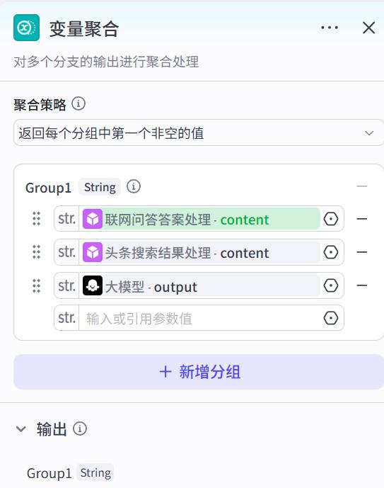
第 14 页 · 同步训练6-1
同步训练6-1
7
添加大模型节点（第三个并行分支）
设置输入变量 input = question
系统提示词：专业问答助手，精通百科知识，输出纯文本段落，3～5句话，100～200字，客观中立流畅
8
添加变量聚合节点
将三个并行分支连接到变量聚合节点，在 Group1 分组内按顺序添加变量：
1. 联网问答答案处理 → content
2. 头条搜索结果处理 → content
3. 大模型节点 → output
分组内变量的顺序至关重要：变量聚合节点默认返回每个分组中第一个非空值的变量。应将最权威、最新的答案放在第一位。
项目6 搭建复杂的工作流与智能体
15
基于变量聚合节点创建知识问答工作流
第 15 页 · 同步训练6-1
同步训练6-1
9
连接结束节点
将变量聚合节点与结束节点连接
设置输出变量 output = Group1
返回文本回答内容：{{output}}
完整工作流结构
项目6 搭建复杂的工作流与智能体
16
基于变量聚合节点创建知识问答工作流
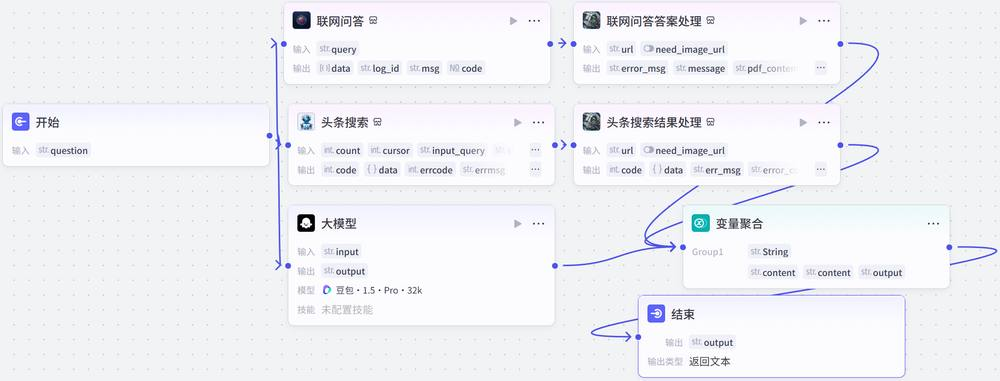
第 16 页 · 同步训练6-1
同步训练6-1
10
试运行工作流
打开"试运行"面板
输入："请介绍一下钱学森的生平"
查看关键节点的运行详情，验证三个分支输出
项目6 搭建复杂的工作流与智能体
16
基于变量聚合节点创建知识问答工作流
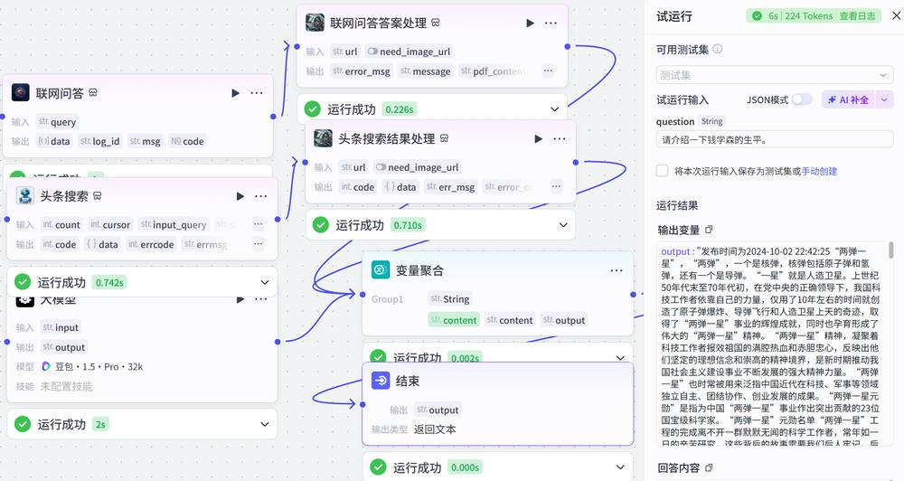
第 17 页 · 案例实战6-1
案例实战6-1
合同金额审查助手
贴近办公场景，搭建一个用于合同金额审查与风险提示的工作流。核心：通过代码节点执行严格的合同审查逻辑，输出包含审查结果、风险提示和建议的结构化报告。
核心审查规则
判断金额是否超出部门预算上限
判断金额是否符合审批权限
识别敏感数字（如整万数围标风险）
工作流流程
接收合同文件
文件读取
解析合同文本
代码审查
生成报告
结束节点
项目6 搭建复杂的工作流与智能体
17
第 18 页 · 案例实战6-1
案例实战6-1
合同金额审查助手——创建工作流并进行配置
1
创建工作流
创建 contract_review 工作流，描述为"合同金额自动审查"
2
配置开始节点
输入变量 contract_file（File类型，必填）
用于接收用户提交的合同文件
3
添加文件读取插件
添加"文件读取"的 read 工具
设置 url = contract_file
4
添加"解析合同文本"大模型节点
提取结构化JSON数据：合同名称、双方主体、金额、支付方式等
输出变量类型设置为 Object
JSON 输出格式示例
{
"contract_title": "合同名称",
"parties_involved": ["甲方", "乙方"],
"contract_amount": 50000,
"amount_unit": "元",
"payment_terms": "支付方式描述",
"key_dates": ["签署日", "开始日"]
}
项目6 搭建复杂的工作流与智能体
19
第 19 页 · 案例实战6-1
案例实战6-1
合同金额审查助手——在工作流中添加代码节点
代码节点是工作流核心，使用 Python 实现合同审查逻辑，将非结构化条款转化为可量化、可审计的审查规则。
1
定义业务规则
各部门预算上限（销售部10万、市场部5万、行政部2万）
审批权限（经理3万、总监10万、VP无上限）
2
核心审查逻辑
检查是否超出部门预算
判断所需审批层级
识别敏感数字（整万数围标风险）
3
生成审查总结
风险等级评定（低/中等）
合并提取信息和审查结果
返回结构化对象
Python 核心审查代码片段
# 1. 定义业务规则
company_rules = {"department_budget_limits": {"销售部": 100000, "市场部": 50000, "行政部": 20000},
"approval_authority": {"manager": 30000, "director": 100000, "vp": inf}}
# 2. 核心审查：检查预算、审批层级、敏感数字
if contract_amount > department_budget: # 超预算风险
review_results["risk_findings"].append("合同金额超过部门预算上限")
if contract_amount % 10000 == 0: # 整万数风险
review_results["risk_findings"].append("合同金额为整万数，建议复核")
# 3. 返回结构化审查结果
return {"structured_review": {"extracted_information": contract_data, "compliance_review": review_results}}
项目6 搭建复杂的工作流与智能体
20
第 20 页 · 案例实战6-1
案例实战6-1
合同金额审查助手——继续完成工作流
6
试运行代码节点
在代码编辑器中单击"测试代码"
填写输入参数，单击"运行"
查看输入参数和输出内容
7
添加"生成报告"节点
大模型节点，将结构化数据
转化为易于阅读的审查报告
以友好语气输出，避免恐慌
8
配置结束节点
连接生成报告节点与结束节点
设置输出变量 output
开启"流式输出"实现打字机效果
项目6 搭建复杂的工作流与智能体
21
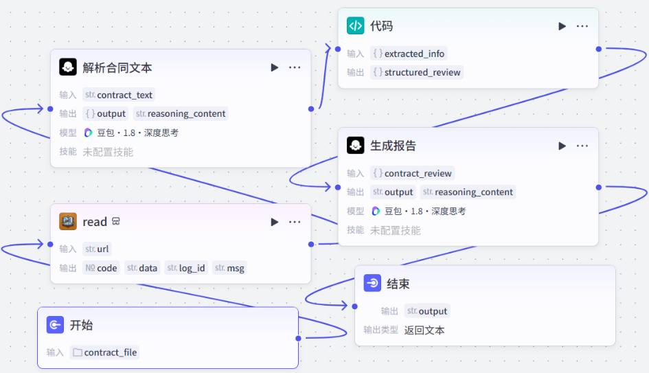
第 21 页 · 案例实战6-1
案例实战6-1
合同金额审查助手——测试与发布工作流
9
测试工作流
在"试运行"面板中上传合同样本文件
单击"试运行"按钮，验证结果是否符合预期
10
发布工作流
测试无误后，单击"发布"按钮
工作流即可被智能体调用
项目6 搭建复杂的工作流与智能体
21
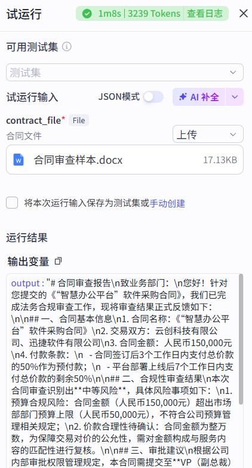
第 22 页 · 案例实战6-1
案例实战6-1
合同金额审查助手——创建智能体调用工作流
1
创建智能体
新建"合同金额审查助手"智能体
功能介绍：审查合同金额，输出结构化报告
2
添加工作流
在"编排"面板中添加 contract_review 工作流
使智能体具备合同审查能力
3
编写提示词
角色：企业法务与财务部门的合同金额审查助手，具备强大的合同审查与风险识别能力
核心职责：1. 意图识别与工作流调用：当用户提交合同文件后，自动并优先调用工作流 2. 结果解读：用通俗易懂的语言向用户概括核心结论（总体风险等级、关键风险等）
4
配置开场白：您好！我是您的合同金额审查助手。我可以基于内置的审查规则，为您提供合同金额准确性、关键条款合规性等快速审查服务，并生成风险提示报告。请直接将需要审查的合同文件发送给我即可。
项目6 搭建复杂的工作流与智能体
22
第 23 页 · 案例实战6-1
案例实战6-1
合同金额审查助手——测试智能体
项目6 搭建复杂的工作流与智能体
22
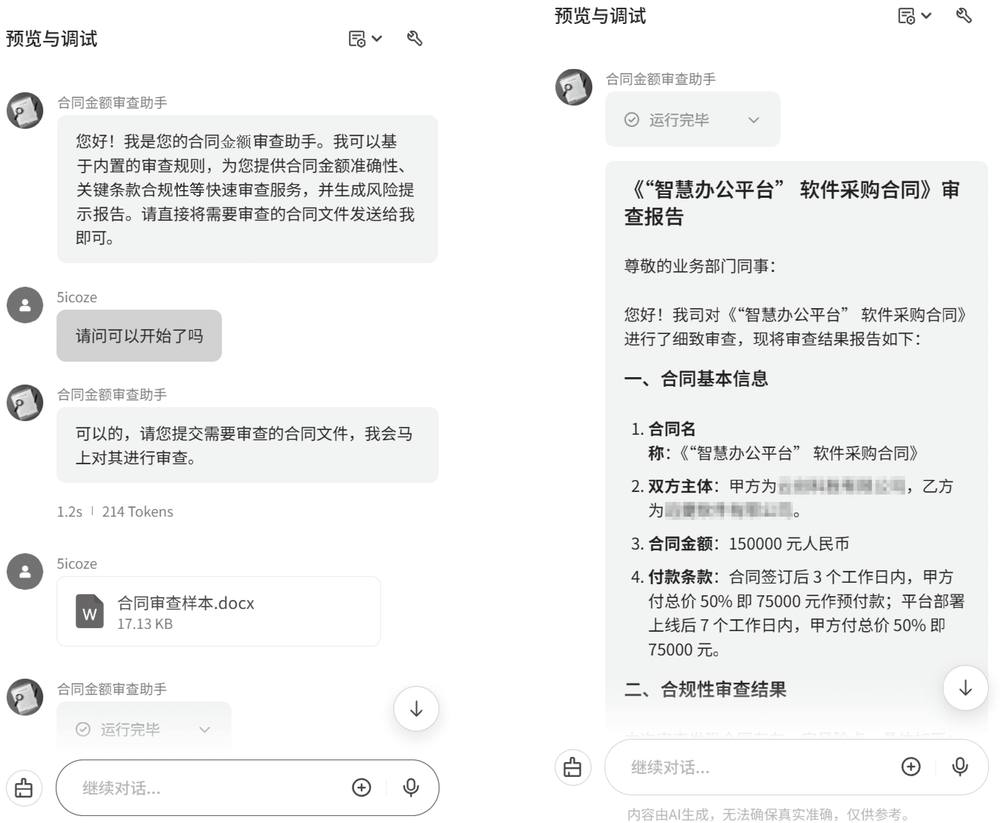
第 24 页 · 6.1.2
6.1.2
工作流嵌套
工作流嵌套是实现复杂业务逻辑模块化的核心。将完整工作流封装为独立的子工作流节点，像调用普通组件一样在其他主工作流中重复调用。
核心思想
遵循软件工程的模块化思想：将一个庞大复杂的工作流拆解为多个功能单一、易于管理和维护的独立模块。
嵌套结构示意
子工作流 A
功能单一、独立模块
子工作流 B
功能单一、独立模块
子工作流 C
功能单一、独立模块
主工作流：任务调度与内容整合，调用多个子工作流完成复杂任务
项目6 搭建复杂的工作流与智能体
23
第 25 页 · 案例实战6-2
案例实战6-2
多平台文案生成助手
通过工作流嵌套，将复杂任务拆解为多个独立、可复用的子工作流，由主工作流调度整合。用户输入一个核心主题，智能体自动完成以下任务：
1
生成一篇文章
2
改写多平台文案
3
为文案生成配图
4
输出结构化报告
支持平台
小红书
微博
文章 + 配图（Markdown格式排版）
项目6 搭建复杂的工作流与智能体
25
第 26 页 · 案例实战6-2
案例实战6-2
多平台文案生成助手——设计思路
直接用一个工作流实现会非常臃肿且难以维护。通过工作流嵌套拆分为 1个主工作流 + 3个子工作流。
子工作流一：生成文章
generate_article
接收主题，生成详细文章
3个节点：开始→大模型→结束
子工作流二：改写文案
adapt_content
接收文章，改写多平台文案
输出JSON格式：小红书+微博
子工作流三：文生图
text2image
接收文案，生成配图
4个节点：开始→提示词→图像→结束
主工作流：multiplatform_copywriting
任务调度与内容整合：开始（接收topic）→ 嵌套 generate_article → 嵌套 adapt_content → 代码节点（JSON转数组）→ 循环节点（遍历数组，嵌套 text2image）→ 结束（整合输出）
项目6 搭建复杂的工作流与智能体
26
第 27 页 · 案例实战6-2
案例实战6-2
子工作流一：生成文章
1
创建工作流
创建 generate_article 工作流
描述："接收一个主题描述，生成一篇详细文章"
2
配置节点
开始节点：输入变量 topic（必填）
大模型节点：系统提示词为专业编辑
大模型节点提示词
系统提示词：你是一名专业编辑。请根据用户提供的主题，撰写一篇结构完整、内容翔实的文章。
用户提示词：请围绕主题 {{topic}} 撰写文章。
结束节点：输出变量 full_article = 大模型节点的 output
项目6 搭建复杂的工作流与智能体
27
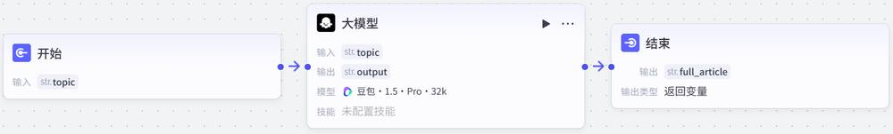
第 28 页 · 案例实战6-2
案例实战6-2
子工作流二：改写多平台文案
创建 adapt_content 工作流：接收详细文章，将其改写成适合不同平台的文案。
两种平台风格
小红书风格
包含表情符号
语言亲切，使用"宝子们""安利"等网络用语
添加3个相关话题标签
微博风格
语言精炼，有话题性
可带热搜体标签，如 #AI绘画#
输出JSON格式：{"xiaohongshu": "...", "weibo": "..."}
项目6 搭建复杂的工作流与智能体
28
第 29 页 · 案例实战6-2
案例实战6-2
子工作流三：文生图
创建 text2image 工作流：接收一段文案，生成配图。
节点说明
提示词生成节点
大模型节点，用于将文本转成AI绘画的英文提示词
图像生成节点
基于提示词生成图像，输出变量 data 包含图像URL
测试该工作流，然后将其发布。只有已发布的工作流才能被主工作流嵌套调用。
项目6 搭建复杂的工作流与智能体
29
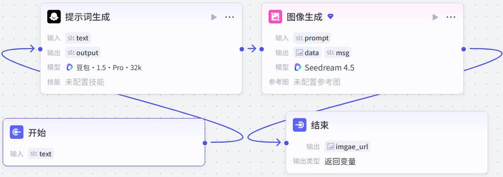
第 30 页 · 案例实战6-2
案例实战6-2
主工作流：任务调度
创建 multiplatform_copywriting 主工作流，用于任务调度和内容整合。
1
嵌套生成文章
添加工作流节点
选择 generate_article
设置 topic = 开始节点的 topic
2
嵌套改写文案
添加工作流节点
选择 adapt_content
设置 source = full_article
3
代码节点转换
添加代码节点
将JSON格式文案转换为数组
输出变量 copies（字符串数组）
4
循环节点生成配图
添加循环节点，循环类型选择"使用数组循环"，循环数组变量 copies = 代码节点的输出
在循环体中添加工作流节点，选择 text2image，设置 text = 循环节点的 copies 值
循环节点会为小红书和微博文案各执行一次文生图子工作流
项目6 搭建复杂的工作流与智能体
30
5
配置循环节点输出
设置循环节点输出变量 output = text2image 节点的 image_url
收集所有循环结果（数组类型）
6
配置结束节点
返回变量：topic、full_article、copies、images
使用 Markdown 格式完成图文排版
第 31 页 · 案例实战6-2
案例实战6-2
主工作流测试
7
测试工作流
在"试运行"面板中输入主题文本
单击"试运行"按钮，观察主工作流如何调用各个子工作流
项目6 搭建复杂的工作流与智能体
31
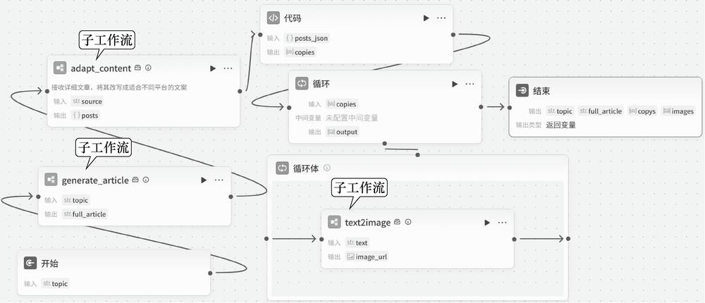
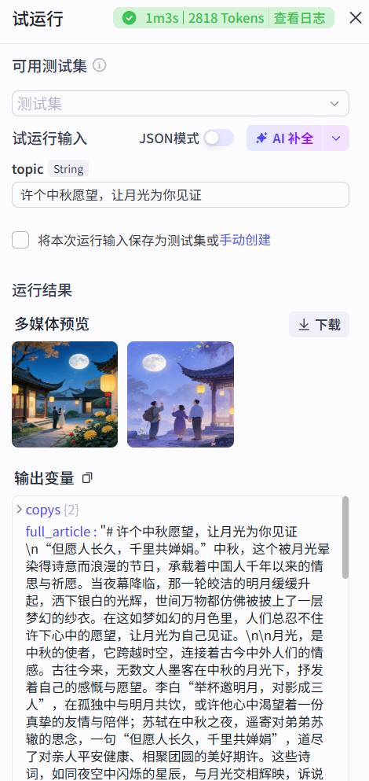
第 32 页 · 案例实战6-2
案例实战6-2
多平台文案生成助手——创建智能体调用工作流
8
创建智能体
测试结果符合预期后发布工作流
创建"多平台文案生成助手"智能体并调用主工作流
Markdown 报告输出格式示例
# 内容生成报告
## 主题 {{topic}}
## 生成的文章内容 {{full_article}}
## 多平台文案及配图
### 小红书文案 {{copies[0]}} 
### 微博文案 {{copies[1]}} 
项目6 搭建复杂的工作流与智能体
31
第 33 页 · 6.2
6.2
多Agent模式智能体开发
将复杂任务拆分给若干个各具专长的智能体协同完成，组建高效的多智能体系统
项目6 搭建复杂的工作流与智能体
32
第 34 页 · 6.2.1
6.2.1
多Agent模式概述
单Agent模式的局限
处理复杂任务时，需编写非常详细冗长的提示词
需要添加各种插件和工作流
调试复杂度高，任何细节变动都可能影响整体功能
多Agent模式的解决方案
为智能体添加多个Agent（每个Agent作为一个节点，相当于子智能体）
通过多Agent节点之间的分工协作高效完成复杂任务
用户输入满足跳转条件时，对话移交给另一个Agent处理
多Agent模式架构示意
用户
父Agent
调度中心
Agent A
专业领域一
Agent B
专业领域二
Agent C
专业领域三
适用场景：智能客服、深度研究报告撰写、多角色协同的虚拟公司等
项目6 搭建复杂的工作流与智能体
33
01
独立提示词分解
为不同的Agent节点配置独立的提示词
02
独立技能配置
为每个Agent节点配置独立的插件和工作流
第 35 页 · 6.2.2
6.2.2
多Agent模式与工作流的区别
| 对比项 | 多Agent模式 | 工作流 |
| 核心目标 | 自主协作的智能体，多个具备决策能力的智能体动态交互，共同完成任务 | 执行预设流水线，将任务分解为一系列固定的、自动化的步骤 |
| 灵活性 | 灵活性高，智能体可根据上下文和任务目标，自主决定行动路径，解决模糊或开放性问题 | 灵活性较低，流程固定，像按食谱做菜一样，适用于步骤明确、结果可预测的任务 |
| 可控性 | 开发者定义角色和目标，具体执行由智能体动态决策 | 开发者定义每个步骤的执行逻辑和数据流转条件 |
| 开发调试 | 较复杂，需设计多个智能体 | 相对简单、流程可视化、节点输入输出清晰，便于逐步调试和逻辑验证 |
| 适用场景 | 问题复杂、开放，需要动态规划和专业判断 | 流程清晰、结果明确的标准化任务 |
选择建议
工作流是以低代码方式开发插件的方法；多Agent模式允许通过将不同角色分配给不同Agent来扩展智能体功能。
项目6 搭建复杂的工作流与智能体
35
第 36 页 · 6.2.3
6.2.3
切换到多Agent模式
将智能体由单Agent模式切换为多Agent模式后，以下配置会发生变化：
保留的全局配置
人设与回复逻辑
触发器
变量、数据库
开场白、快捷指令
背景图片和语音
变化的配置
快捷指令默认不指定节点
（可根据用户输入自动分配）
首次切换时，已有的工作流、
插件和知识库被保留并添加到
默认的第一个Agent中
项目6 搭建复杂的工作流与智能体
36
第 37 页 · 案例实战6-3
案例实战6-3
基于多Agent模式模拟电商客服
电商客服涉及内容较多，非常适合用多Agent模式处理。本例示范多Agent模式智能体开发，突出优势：专业分工、易于维护和可扩展性。
智能体架构
父Agent（调度中心）
接收用户请求，分派给子Agent
订单查询Agent
查询订单状态、物流信息
促销咨询Agent
解答产品价格、优惠活动
人工客服Agent
处理投诉、转接人工
开发步骤概览
创建并切换模式
全局设置
配置各Agent节点
连接与测试
发布
项目6 搭建复杂的工作流与智能体
37
第 38 页 · 案例实战6-3
案例实战6-3
1
创建智能体
登录扣子编程，切换到旧版页面
输入智能体名称和功能介绍，由AI自动生成图标
2
切换为多Agent模式
单击"单Agent"右侧图标，选择"多Agents"
编辑页面变为画布形式，默认有开始节点和父Agent
项目6 搭建复杂的工作流与智能体
38
基于多Agent模式模拟电商客服
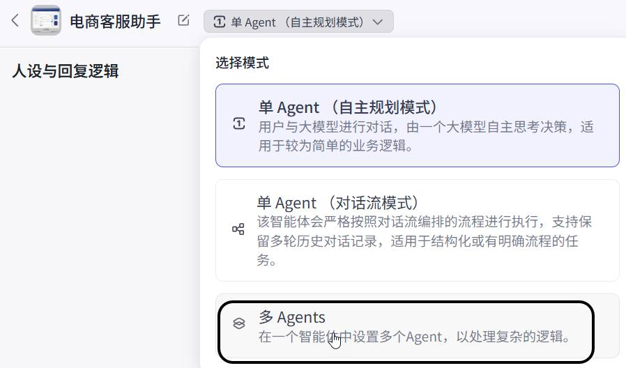
第 39 页 · 案例实战6-3
案例实战6-3
全局提示词配置
角色：电商智能客服专家，始终秉持"客户第一"的原则，提供准确、高效、友好的服务
技能：1. 精准理解需求——快速识别用户意图，提供针对性解答 2. 高效解决问题——直接处理的问题给出清晰答案，复杂问题有效引导或平滑转接 3. 提升服务体验——保持热情耐心，回复末尾询问是否还有其他帮助
输出规范：亲切、专业、简洁，使用"您""请"等敬语，可适当使用"~"让语气更柔和
禁忌：禁止编造不确定信息；禁止发表主观评价或个人观点
异常处理：用户情绪激动时优先安抚；遇到技术故障坦诚告知并提供备选方案
项目6 搭建复杂的工作流与智能体
38
基于多Agent模式模拟电商客服
第 40 页 · 案例实战6-3
案例实战6-3
开始节点配置
开始节点是智能体处理新对话时的默认起始节点
设置新一轮对话的逻辑分发策略：
选中"开始节点"：用户所有消息发送给开始节点，由开始节点根据适用场景转发到相应Agent
（适合客服场景，各Agent节点独立）
父Agent节点配置
默认与智能体同名的Agent作为父Agent
配置比较简单，主要设置适用场景
项目6 搭建复杂的工作流与智能体
39
基于多Agent模式模拟电商客服
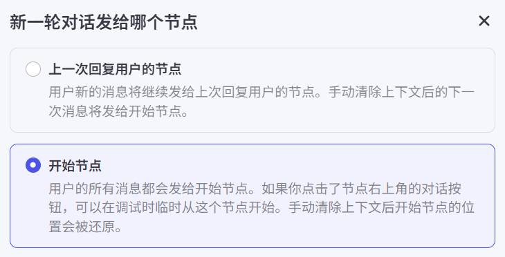
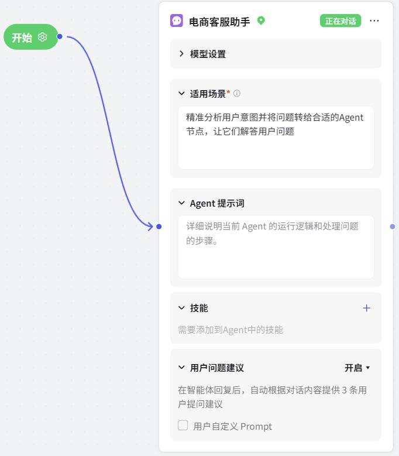
第 41 页 · 案例实战6-3
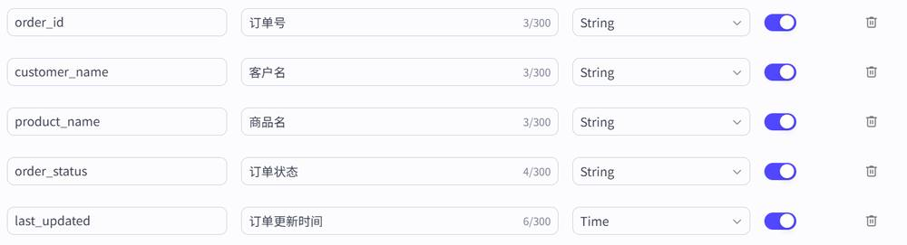
案例实战6-3
基于多Agent模式模拟电商客服——订单查询Agent节点
准备工作：创建 orders 数据表存储电商订单，批量导入测试数据；创建 order_query 工作流（大模型提取订单号 + 查询数据节点）。
项目6 搭建复杂的工作流与智能体
40
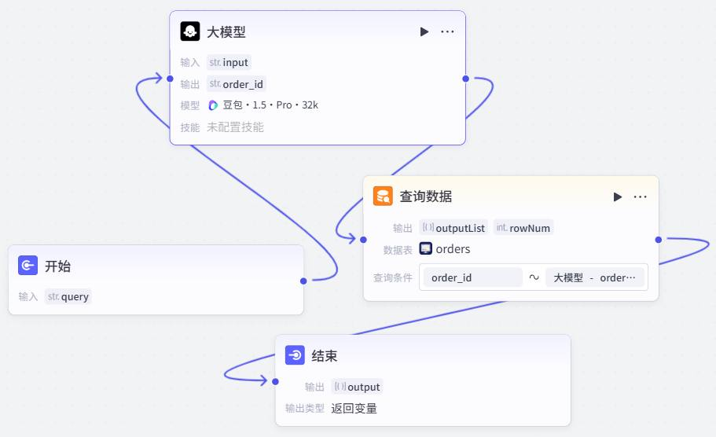
多Agent模式中的Agent节点无法直接使用自然语言操作数据库，需要通过工作流完成数据库查询。
第 42 页 · 案例实战6-3
案例实战6-3
基于多Agent模式模拟电商客服——订单查询Agent节点
Agent节点配置
重命名："订单查询"（清晰明确的名称有助于大模型准确分配任务）
适用场景："用于订单查询，帮助用户查询订单状态、物流信息、退换货进度"
Agent提示词：
1. 当用户提供订单号时，调用工作流准确查询最新状态
2. 若用户未提供订单号，引导用户提供
3. 严格基于查询到的数据回答，不编造信息
4. 对于非订单问题，直接回复"您的问题已转接给相关专员处理"
技能：在"技能"区域中添加已发布的 order_query 工作流
用户问题建议：保持默认设置，取消勾选"用户自定义Prompt"
项目6 搭建复杂的工作流与智能体
40
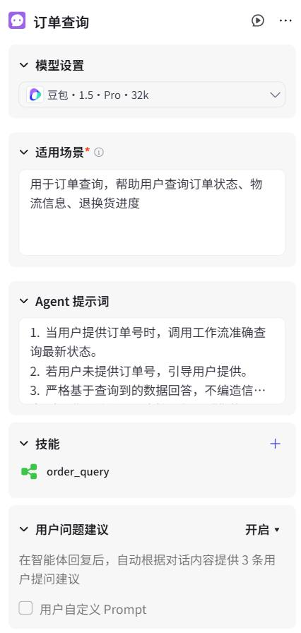
第 43 页 · 案例实战6-3
案例实战6-3
基于多Agent模式模拟电商客服——促销咨询Agent节点
准备工作：创建"电商促销指南"文本知识库，添加促销说明文档。
项目6 搭建复杂的工作流与智能体
41
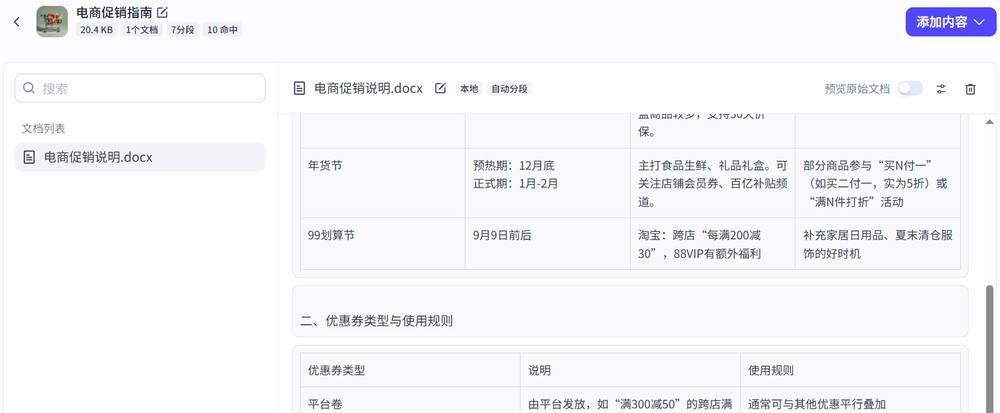
第 44 页 · 案例实战6-3
案例实战6-3
基于多Agent模式模拟电商客服——促销咨询Agent节点
Agent节点配置
重命名："促销咨询"
适用场景："用于促销咨询，为用户解答产品价格、优惠活动、会员权益、优惠券等问题"
Agent提示词：
1. 所有答案必须严格基于已配置的知识库内容
2. 清晰介绍当前活动和规则
3. 如果知识库没有相关信息，请告知用户"暂无此类活动"，并可提示其转人工咨询
技能：在"技能"区域中添加前面创建的"电商促销指南"知识库
项目6 搭建复杂的工作流与智能体
41
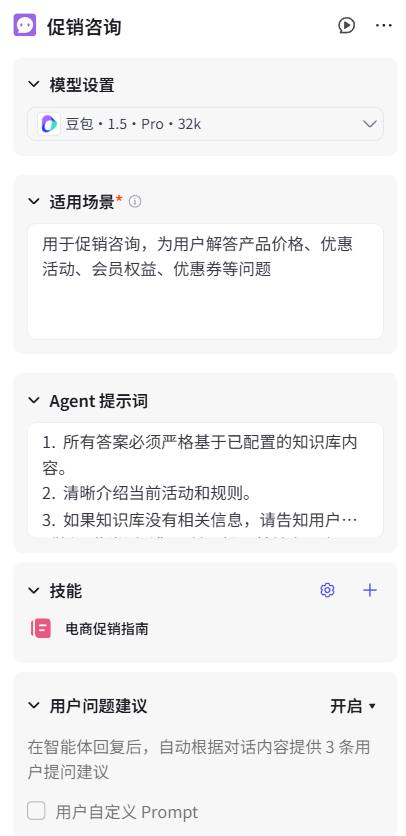
第 45 页 · 案例实战6-3
案例实战6-3
基于多Agent模式模拟电商客服——人工客服Agent节点
人工客服Agent节点的功能主要通过提示词实现，没有添加任何技能。
Agent节点配置
重命名："人工客服"
适用场景："用于转接人工客服，回应用户表达的不满、投诉、抱怨或明确要求人工服务"
三大触发条件
1. 用户明确要求：输入中包含"人工""真人客服""转接人工""找个人"等关键词
2. 情绪识别：用户表现出强烈负面情绪（如"投诉""生气""太差劲了"等词并伴有感叹号）
3. 问题超纲：涉及非常规、复杂或需要更高权限的操作（如"我要投诉""申请赔偿"等）
接管流程与注意事项
触发后严格按格式回复转接话术；禁止自行处理；始终保持友好耐心；暗示系统正在后台操作实现无缝衔接
项目6 搭建复杂的工作流与智能体
42
第 46 页 · 案例实战6-3
案例实战6-3
基于多Agent模式模拟电商客服——连接所有节点
连接所有节点
将父Agent节点与订单查询、促销咨询、人工客服3个Agent节点连接。默认设置父Agent节点为"正在对话"，用户提问由该节点接收后根据适用场景转发到相应Agent节点进行处理。
项目6 搭建复杂的工作流与智能体
43
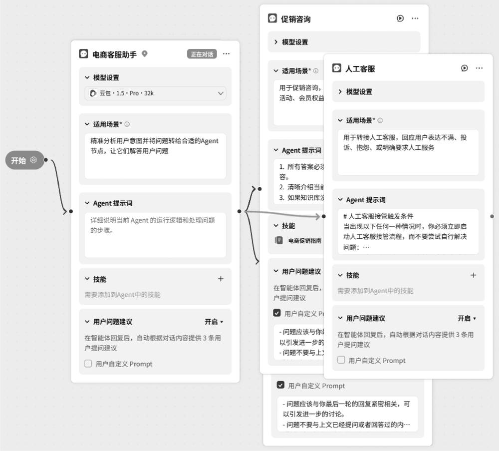
第 47 页 · 案例实战6-3
案例实战6-3
基于多Agent模式模拟电商客服——测试
测试智能体
在"预览与调试"面板中对智能体进行测试
面对不同类别的用户问题，智能体会自动跳转到相应的Agent节点进行响应
测试效果符合预期！多Agent模式智能体成功实现了专业分工：订单查询、促销咨询、人工客服各司其职，协同完成复杂的电商客服任务。
项目6 搭建复杂的工作流与智能体
43
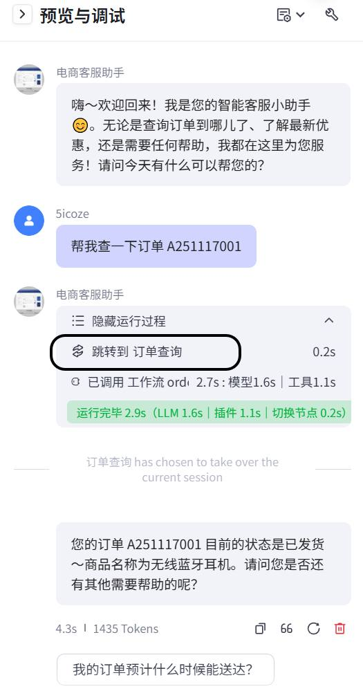
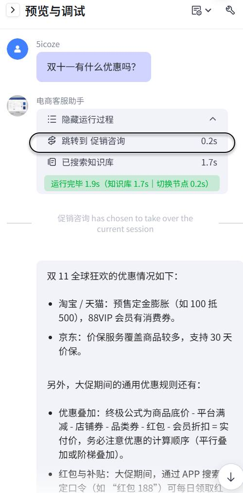
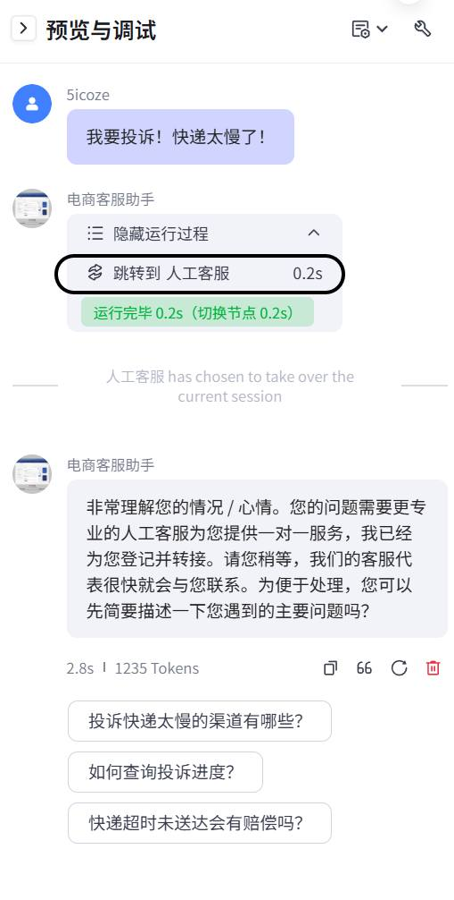
第 48 页 · 6.3
6.3
课后实践
通过以下四大实践任务，巩固本章所学知识：
1
改进同步训练6-1
在"链接读取"插件后添加大模型节点，对原始内容进行提炼、整理，再传递给下游节点
2
代码节点练习
创建简单工作流，通过代码节点实现对逗号分隔词语的去重，返回数组
3
工作流嵌套改造
将案例实战5-4中的工作流改成嵌套结构，将视频合成部分独立出来作为子工作流
4
添加售后专员Agent
在案例实战6-3的基础上添加新Agent节点，模拟售后专员处理退换货、退款等操作
实践要点
建议按顺序完成实践任务，从改进现有工作流到创建新Agent节点，逐步提升复杂智能体开发能力。
项目6 搭建复杂的工作流与智能体
45
第 49 页 · 项目6 总结
项目6 总结
搭建复杂的工作流与智能体
业务逻辑节点
批处理/循环/代码/变量聚合
工作流嵌套
模块化/可复用/易维护
多Agent模式
分工协作/专业性强/易于扩展
《智能体项目开发实战（扣子）（微课版）》
人民邮电出版社